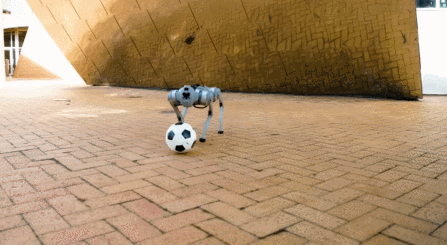

Whole-body Athleticism

DribbleBot
A quadruped robot that can dribble a soccer ball under the same real-world conditions as humans. The system learns to dribble through deep reinforcement learning, demonstrating whole-body coordination and dynamic balance while performing complex athletic maneuvers. The robot can navigate various terrains while maintaining ball control, showcasing advanced locomotion capabilities.
Project Website